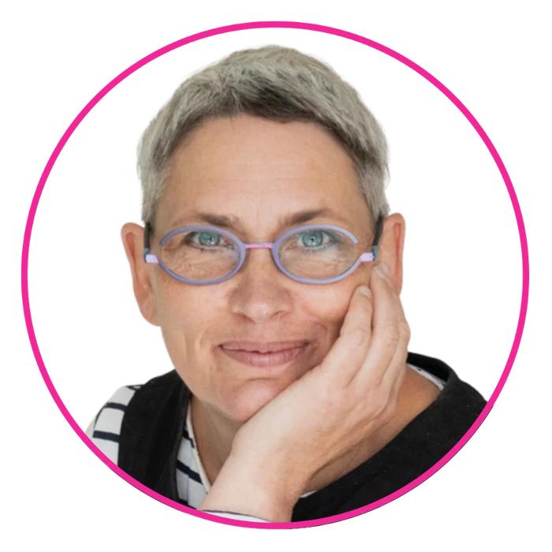
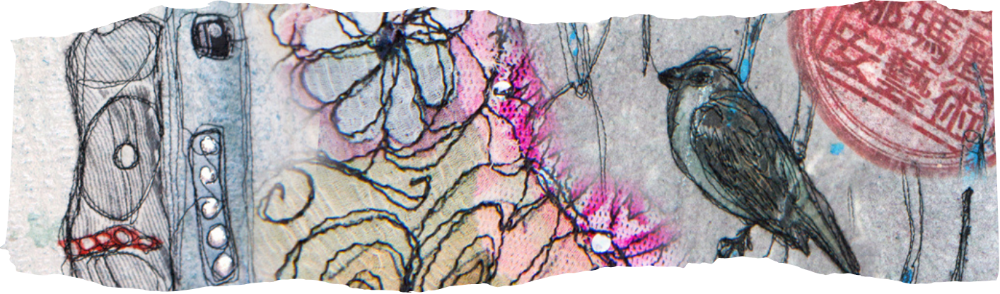
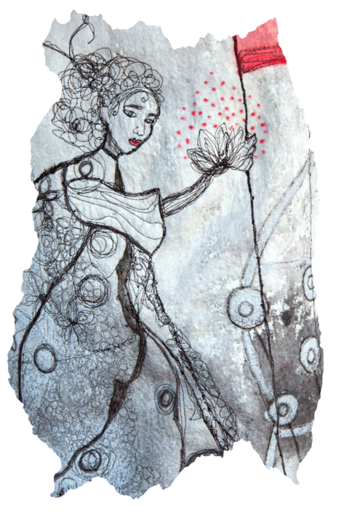
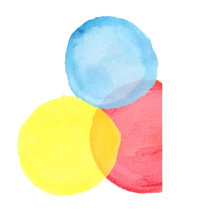

Individual sessions · Workshops · Retreats

Develop your creativity, reveal your artistic expression and flourish personally
Hello,
I am Ariane Mariane, artist and Gestalt practitioner — or, to keep it simple and original: GestaltArtist. I design and facilitate spaces where Art & Gestalt meet, to support you in developing your creativity, revealing your artistic expression and flourishing personally.
Art allows us to make the invisible visible. The Gestalt approach invites us to become aware of what is seeking to emerge. The meeting of Art & Gestalt opens a space for exploration and for listening to yourself.
The act of creating can open a space for introspection. Gestalt makes it possible to welcome and support whatever shows up. This meeting of Art & Gestalt can also be a resource when you are going through a period of change, questioning or a difficult situation.
“By giving form to what is felt but not yet conscious, we discover who we are and who we are becoming.”— Carl Rogers

What if everything were possible?
No particular skill or artistic talent is needed to connect with your unique creativity.
If this speaks to you, I will be by your side to move forward from wherever you are today.
I support you from your home, in a confidential and secure setting, through moments of transformation and change, at your own pace and according to your needs.
Learn moreEnjoy the richness and dynamics of a group and explore Art & Gestalt therapy online through:
Step out of daily life to make room for creativity:

To create support tailored to you, I offer a free first phone appointment of 20 minutes, with no commitment.
This first conversation lets us get to know each other, talk about your needs and sense together whether we would like to work with one another.
Contact me to book the discovery call.
ContactArt, especially when it is intuitive and experimental, is a powerful resource for giving form to what is lived inwardly. Experiment with materials, colours and creative processes to let your artistic expression emerge. By exploring your creativity, it is possible to give form to your inner world, sometimes even before you are aware of it.
Gestalt therapy invites you to slow down and turn your attention to what is happening here and now. Through presence and dialogue, you can perceive what is going on within you, and clarify your emotions, your needs and your choices. In this way, new possibilities often open up, and even the impossible can become possible.
Combining Art and Gestalt therapy opens a space where the artistic experience becomes a way of coming into contact with yourself, with others and with the world around us.
Between creation, sensation, presence and dialogue, something can shift: a perception, an emotion, a way of being in relationship, a choice or a new way of looking at a situation. Art then becomes less a result than an experience to live — a path to explore, cross and transform.

Trained at the Bonner Institut für Analytische Gestalttherapie and at the Institut Français de Formation Psychocorporelle (IFFP), my practice is grounded in the principles of Gestalt therapy, with deep respect for each person and their uniqueness.
I am committed to creating safe, caring, confidential and respectful spaces in which exploration, creativity and personal development can unfold freely.
My practice stays within the limits of my skills and my professional field.
I respect the ethical principles of the profession and receive regular supervision in order to guarantee responsible, high-quality support.

